![[Graphics:Images/index_gr_60.gif]](Images/index_gr_60.gif)
| HOME | PERSONAL | PROJECTS | LINKS |
<< Graphics`Graphics`La funzione ρ[θ] definisce la forma del profilo della foglia (o petalo, dipende poi dal colore)
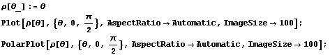
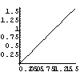
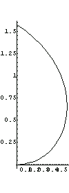
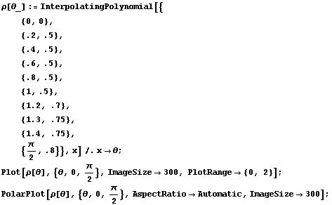
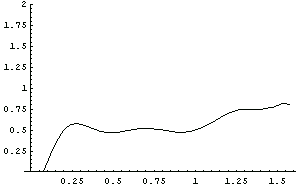
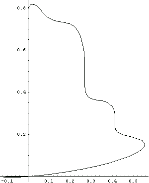
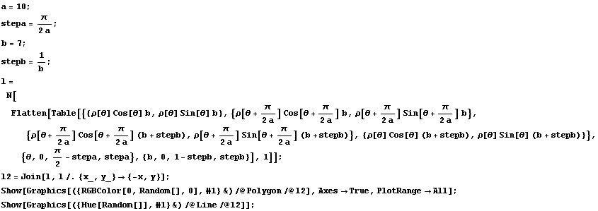
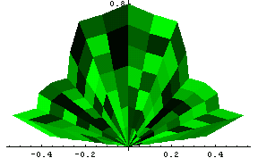
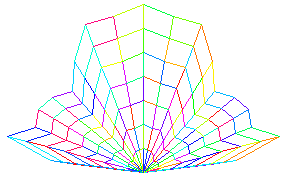
OSSERVAZIONI: la procedura non è la più adatta a generare funzioni positive.
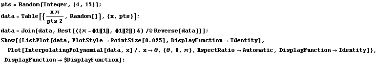
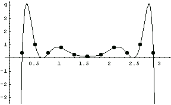
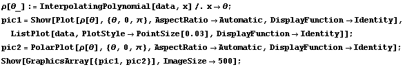
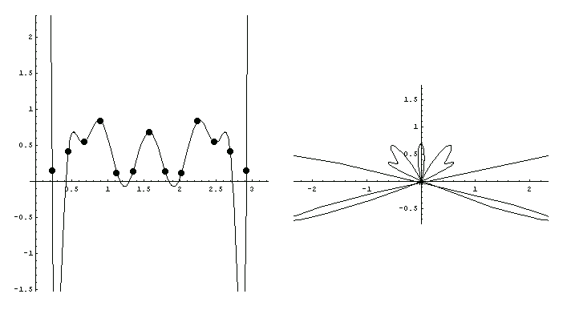
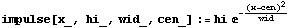
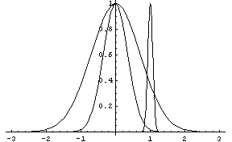
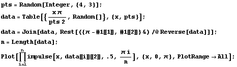
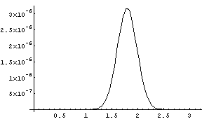
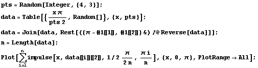
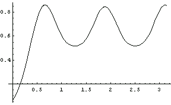
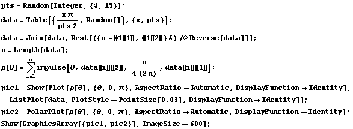
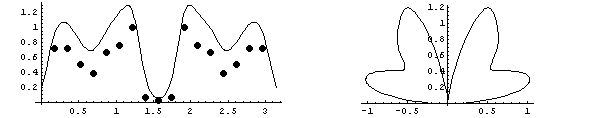
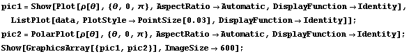
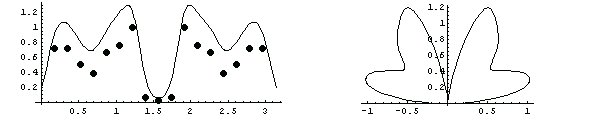
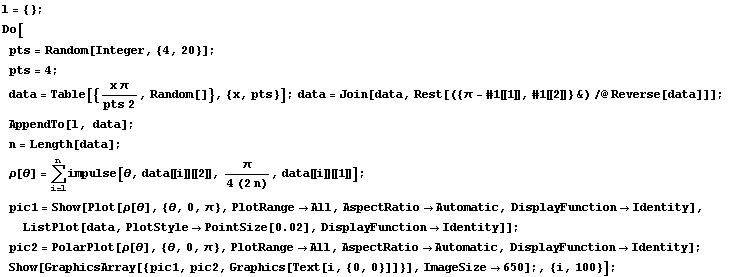
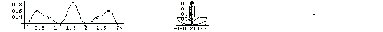
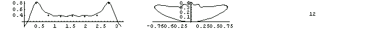
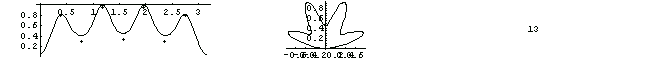
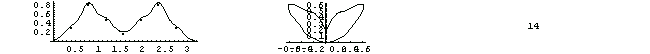
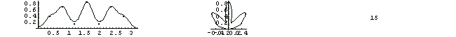
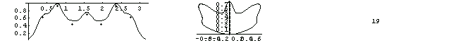
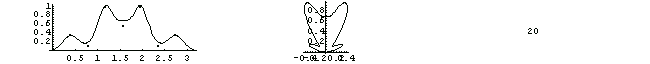
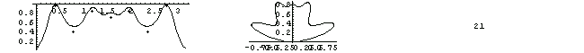
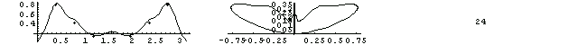
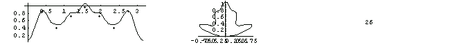
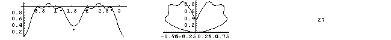
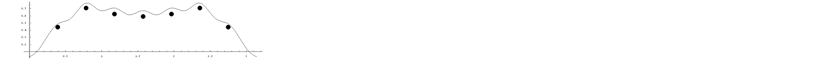
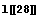
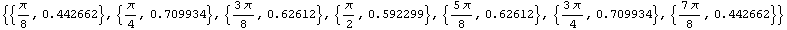
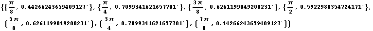
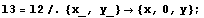
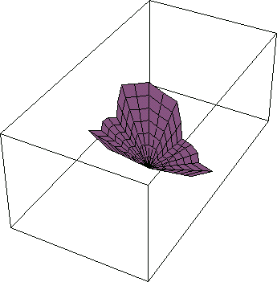
La trasformazione ξ curva il profilo della foglia...
![[Graphics:Images/index_gr_61.gif]](Images/index_gr_61.gif)
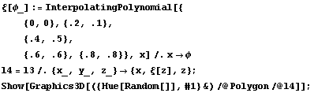
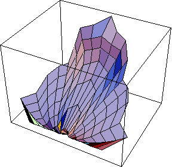
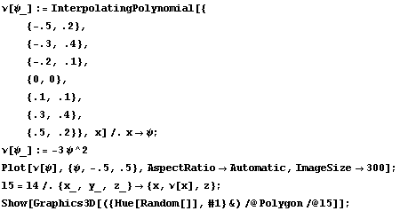
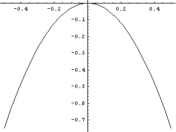
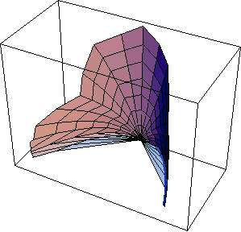
L'ordine di applicazione delle trasformazioni ν e ξ è rilevante.
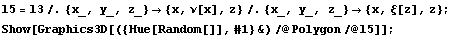
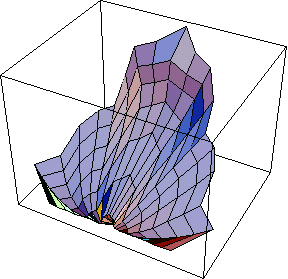
![[Graphics:Images/index_gr_69.gif]](Images/index_gr_69.gif)
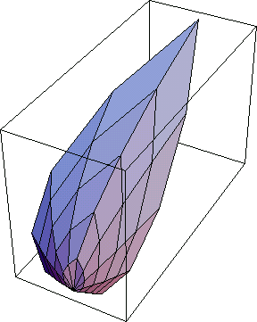
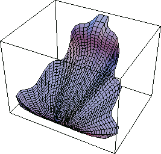
L'efficienza delle routine che seguiranno è condizionata ad una sintetica e completa specicazione delle tre funzioni che generano la trasformazione in 3D.
Le tre funzioni, per definizione e utilizzo sono del tutto simili.
La ρ descrive il profilo della figura:questo può terminare punta o essere piatto (si pensi alle foglie eo petali più diffusi); il profilo può essere frastagliato o liscio,può presentare flessi prodotti da concavità nella rappresentazione cartesiana della funzione stessa.
Per la ξ valgono le stesse considerazioni, a parte il fatto che ci si aspetta (da una foglia o da un petalo di un fiore) una simmetria rispetto all'asse, questo si ottiene considerando funzioni pari.
La ν può essere presa nascente nell'origine e non negativa. In questo modo il gambo della foglia o petalo che sia rimane ancorata in {0,0} per segiure poi un andameto più o meno aperto (ad es. fiore aperto o bocciolo).
Studiamo ora la pendenza della curva ρ[θ] alla "punta" della foglia, quindi per questa quantità definisce quindi la forma di questa punta.
che calcolata in 
Per esempio una ρ[θ]=θ avrà una punta con pendenza:
cui corrisponde una punta di apertura:
Se imponiamo un'apertura pari a 180°, questo equivale a imporre
cioè
Proviamo una ρ[θ] parabolica.
Sarebbe utile a questo punto generare le funzioni di trasformazione sulla base di un numero minimo di parametri.
I parametri della funzione ρ[θ] possono essere:
l: la lunghessa della foglia, quindi il valore ρ[θ] in .
p: la forma della punta, espressa in Gradi e dominio {0, } (ad es. 0 per una cuspide,  per foglia senza punta).
per foglia senza punta).
n: il numero di massimi relativi della ρ[θ], e qiundi il numero di punte.
A questo punto si dovrebbe decidere la forma di queste punte, ma il problema risulta complesso, infatti il modo più gerale possibile sarebbe quello di sfruttare gli stessi parametri di sopra in modo ricorsivo. Senza arrivare a definire una funzione frattale potremmo limitarci a considerare uno o due livelli di innestamento.
...
| HOME | PERSONAL | PROJECTS | LINKS |